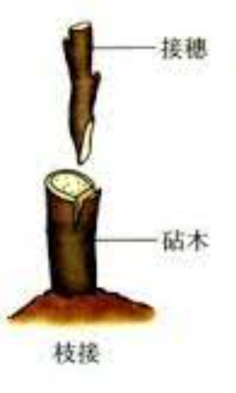

植物的生殖
有性生殖
有性生殖的概念：由两性生殖细胞结合形成受精卵，再由受精卵发育成新个体的生殖方式，属于有性生殖
植物的有性生殖：开花→传粉→受精→胚→新个体
无性生殖
无性生殖的概念：不经过两性生殖细胞的结合，由母体直接产生新个体的生殖方式
无性生殖类型
- 营养生殖
- 分裂生殖
- 出芽生殖
- 孢子生殖
植物的无性生殖
- 扦插
- 嫁接
- 组织培养
......
植物的组织培养
- 植物细胞具有全能性--指植物体每一个细胞在适宜的离体环境下都具有重新形成一个完整的植物体的潜在能力
- 利用无性生殖，使植物组织或细胞等快速发育成新植株的生物技术
- 优点：繁殖速度快，防止植物病毒的侵害，繁殖无病毒的植株
嫁接
- 嫁接后植株枝条上所结的果实表现为接穗的性状
- 砧木为接穗提供水、无机盐等营养物质
- 若想让一棵树上结不同果实，只有嫁接技术可以实现 
树干的结构（从外到内）
- 树皮：靠外是死细胞（保护）；靠内是韧皮部，有筛管，是活细胞，筛管自上而下运输有机物
- 形成层：分生
- 木质部：有导管，自下而上运输水和无机盐
无性生殖 vs. 有性生殖
| 无性生殖 | 有性生殖 | |
| 两性生殖细胞结合 | 无（母体直接产生） | 有（受精卵产生） |
| 遗传特性 | 母体遗传特性 | 双亲遗传特性 |
| 繁殖速度 | 较快 | 较慢 |
| 后代的适应能力 | 较弱 | 较强 |
| 实例 | 苹果的嫁接 | 播种 |